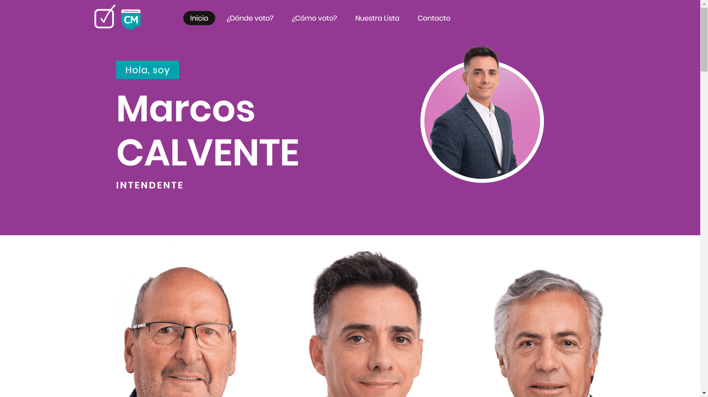
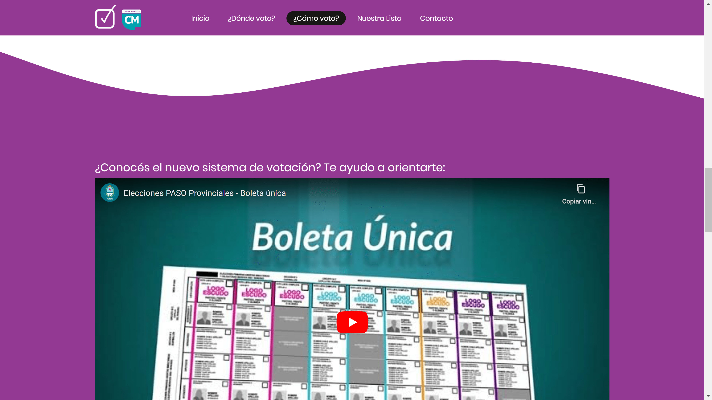
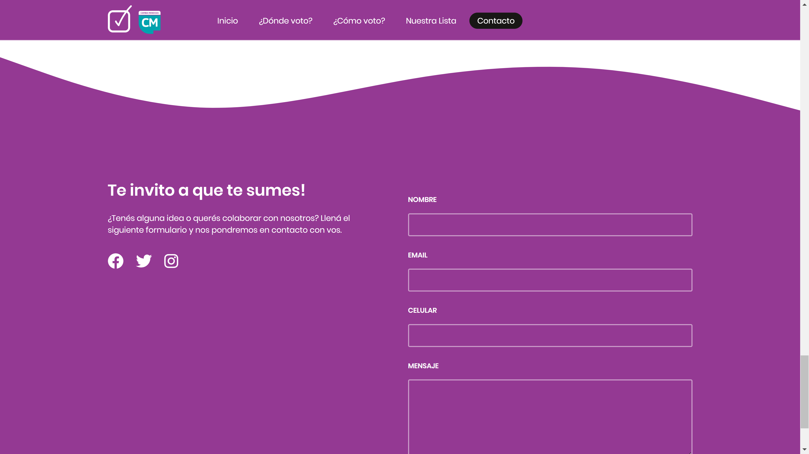

<div id="ajax-page" class="ajax-page-content">
        <div class="ajax-page-wrapper">
                <div class="ajax-page-nav">
                        <div class="nav-item ajax-page-prev-next">
                                <a class="ajax-page-load" href="portfolio-8.html"><i class="lnr lnr-chevron-left"></i></a>
                                <a class="ajax-page-load" href="portfolio-10.html"><i class="lnr lnr-chevron-right"></i></a>
                        </div>
                        <div class="nav-item ajax-page-close-button">
                                <a id="ajax-page-close-button" href="#"><i class="lnr lnr-cross"></i></a>
                        </div>
                </div>

                <div class="ajax-page-title">
                        <h1>Marcos Calvente</h1>
                </div>

                <div class="row">
                        <div class="col-sm-8 col-md-8 portfolio-block">
                                <div class="owl-carousel portfolio-page-carousel">
                                      
                                        <div class="item">
                                                
                                        </div>
                                         <div class="item">
                                                
                                        </div>
                                        <div class="item">
                                                
                                        </div>
                                        <div class="item">
                                                
                                        </div>
                       
                                </div>


                                <script type="text/javascript">
                                        jQuery(document).ready(function($){
                                                $('.portfolio-page-carousel').imagesLoaded(function(){
                                                        $('.portfolio-page-carousel').owlCarousel({
                                                                smartSpeed:1200,
                                                                items: 1,
                                                                loop: true,
                                                                dots: true,
                                                                nav: true,
                                                                navText: false,
                                                                margin: 10,
                                                                autoHeight:true
                                                        });
                                                });
                                        });
                                </script>
                        </div>

                        <div class="col-sm-4 col-md-4 portfolio-block">
                                <!-- Project Description -->
                                <div class="project-description">
                                        <div class="block-title">
                                                <h3>Descripción</h3>
                                        </div>
                                        <ul class="project-general-info">
                                                <li><p><i class="fa fa-user"></i> Alan García</p></li>
                                                <li><p><i class="fa fa-globe"></i> <a href="http://dondevotoguaymallen.com.ar" target="_blank">dondevotoguaymallen.com.ar</a></p></li>
                                                <li><p><i class="fa fa-calendar"></i>May, 2023</p></li>
                                        </ul>

                                        <p class="text-justify">Marcos Calvente es candidato a la intendencia del Departamento de Guaymallén, Mendoza.</p>
                                        <p class="text-justify">Se realizó el diseño de la landing page de su sitio web, el cual incluye un padrón integrado para conocer el lugar de votación de cada persona, un video instructivo del nuevo sistema de votación de la Provincia, y un formulario de contacto.</p>


                                        <div class="tags-block">
                                                <div class="block-title">
                                                        <h3>Tecnología</h3>
                                                </div>
                                                <ul class="tags">
                                                    <li><a>HTML</a></li>
                                                    <li><a>CSS</a></li>
                                                    <li><a>JQuery</a></li>
                                                    <li><a>Bootstrap</a></li>

                                                </ul>
                                        </div>

                                </div>
                        </div>
                </div>
        </div>
</div>